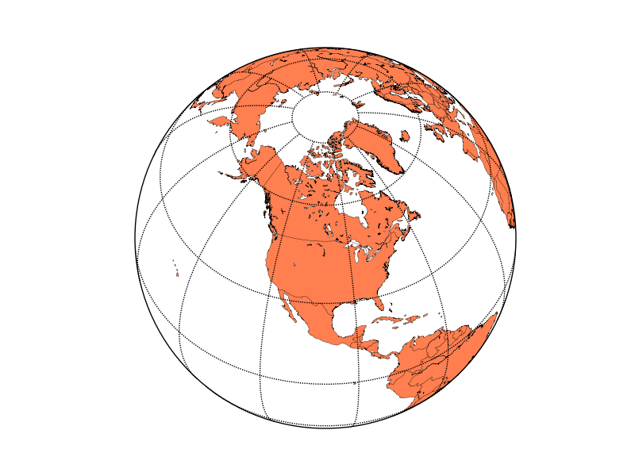
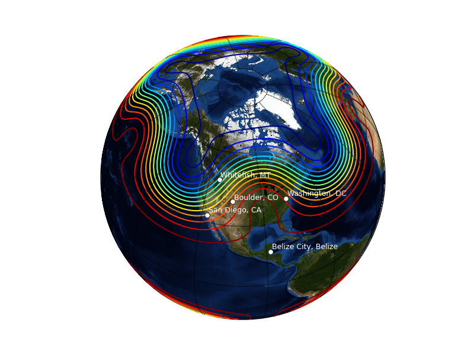

Plotting data on map projections is easy with the basemap toolkit. Toolkits are collections of application-specific functions that extend matplotlib.
The basemap toolkit is not in the default matplotlib install - you can download it from the matplotlib sourceforge download page.
Suppose you’d like to make a map of the world using an orthographic, or satellite projection and plot some data on it. Here’s how to make the map (using matplotlib >= 0.98.0 and basemap >= 0.99):
from mpl_toolkits.basemap import Basemap
import matplotlib.pyplot as plt
import numpy as np
# set up orthographic map projection with
# perspective of satellite looking down at 50N, 100W.
# use low resolution coastlines.
# don't plot features that are smaller than 1000 square km.
map = Basemap(projection='ortho', lat_0 = 50, lon_0 = -100,
resolution = 'l', area_thresh = 1000.)
# draw coastlines, country boundaries, fill continents.
map.drawcoastlines()
map.drawcountries()
map.fillcontinents(color = 'coral')
# draw the edge of the map projection region (the projection limb)
map.drawmapboundary()
# draw lat/lon grid lines every 30 degrees.
map.drawmeridians(np.arange(0, 360, 30))
map.drawparallels(np.arange(-90, 90, 30))
plt.show()
There are many other map projections available, probably more than you’ve even heard of before. A complete list is available in the basemap docstrings. Coastlines, political boundaries and rivers are available in four resolutions, , , and . Here’s what the resolution coastlines look like.
Now, suppose you would like to plot the locations of five cities on this map. Add the following just before the in the above script:
# lat/lon coordinates of five cities.
lats = [40.02, 32.73, 38.55, 48.25, 17.29]
lons = [-105.16, -117.16, -77.00, -114.21, -88.10]
cities=['Boulder, CO','San Diego, CA',
'Washington, DC','Whitefish, MT','Belize City, Belize']
# compute the native map projection coordinates for cities.
x,y = map(lons,lats)
# plot filled circles at the locations of the cities.
map.plot(x,y,'bo')
# plot the names of those five cities.
for name,xpt,ypt in zip(cities,x,y):
plt.text(xpt+50000,ypt+50000,name)
Calling a basemap class instance with arrays of longitudes and latitudes returns those locations in native map projection coordinates using the proj4 library. Now suppose you have some data on a regular latitude/longitude grid and you would like to plot contours of that data over the map. Try adding the following lines just before
# make up some data on a regular lat/lon grid.
nlats = 73; nlons = 145; delta = 2.*np.pi/(nlons-1)
lats = (0.5*np.pi-delta*np.indices((nlats,nlons))[0,:,:])
lons = (delta*np.indices((nlats,nlons))[1,:,:])
wave = 0.75*(np.sin(2.*lats)**8*np.cos(4.*lons))
mean = 0.5*np.cos(2.*lats)*((np.sin(2.*lats))**2 + 2.)
# compute native map projection coordinates of lat/lon grid.
x, y = map(lons*180./np.pi, lats*180./np.pi)
# contour data over the map.
CS = map.contour(x,y,wave+mean,15,linewidths=1.5)
Instead of plotting the continents and coastlines, you can use an image as a map background using the method. The default background image is the NASA ‘blue marble’ image, which you can apply by using
map.bluemarble()
in place of
map.drawcoastlines()
map.drawcountries()
map.fillcontinents(color='coral')
Here’s what the resulting plot looks like (using white text instead of black, and white dots instead of blue)
You can also plot images, pcolor plots and vectors over map projections. Examples that illustrate this and more can be found in the examples directory of the basemap source distribution.
CategoryCookbookMatplotlib